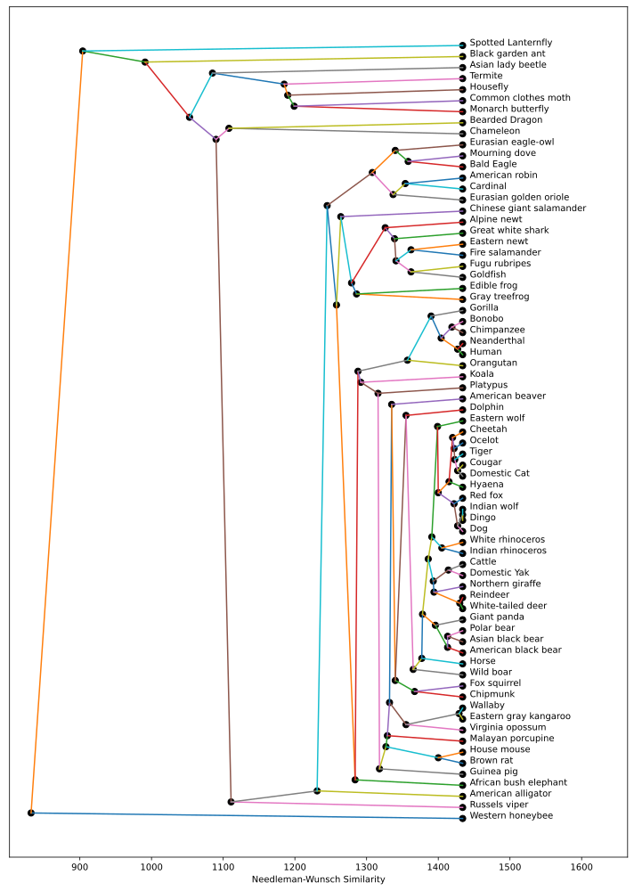
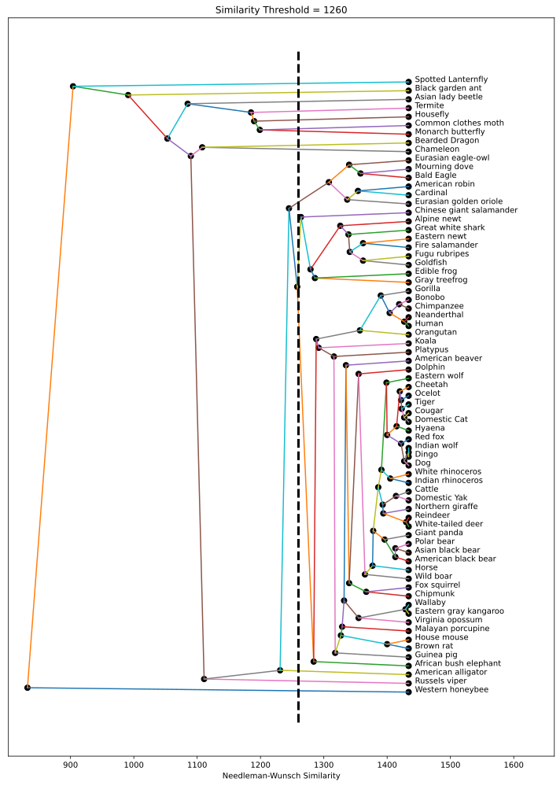
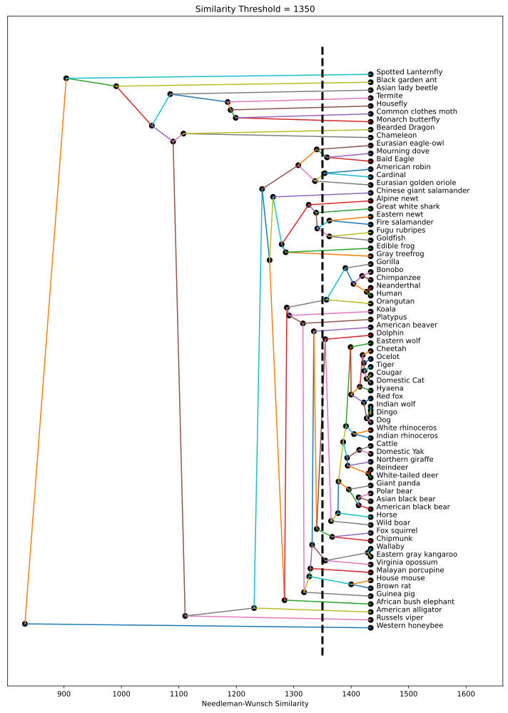

Assignment 5: Phylogenetic Trees (60 Points)
Chris Tralie
Overview / Logistics
This assignment forms the culmination of the unit 5 on trees. In it, you will explore a full pipeline for creating evolutionary trees of species. Amazingly, starting from raw amino acid sequence data from carefully chosen genes and comparing it across species with a dynamic programming algorithm, we are able to create a phylogenetic tree from the ground up, which shows common ancestors in an evolutionary history. What makes this particularly fascinating is that it's all done purely from experimental data and some clever algorithms, and it mirrors theories that have been made about evolutionary history.
There is some extensive background you should review at this link before you get started.
Learning Objectives
This assignment brings together many different ideas about trees, as well as dynamic programming, sorting, and even union find, so it will move you towards mastery of the course content covered to date. Specific learning objectives are as follows:
- Work with dictionaries in Python.
- Implement Needleman-Wunsch scoring for gene sequence comparison using dynamic programming.
- Use Kruskal's algorithm with union find to efficiently implement single-linkage clustering to build phylogenetic trees.
- Use recursion to perform hierarchical clustering on dendrogram trees.
What To Submit
Submit a .zip file with all of your code to canvas. This should include everything needed to run your code, including phylogenetic.py and your union find code, as well as your json code that stores all distances. Also submit your small document on the complexity of the faster algorithm. Finally, write a brief description of the code you wrote, and indicate the name of your buddy if you had one.
Suggested Timeline
Below is a suggested timeline to keep you on track
- By Tuesday 2/12, you should be wrapping up Needleman-Wunsch
- By Friday 4/15, you should have your tree data structure mostly worked out, and you should be working on the single linkage clustering algorithm
- By Tuesday 4/19, you should be finishing up drawing your phyolgenetic trees, and you should be moving onto clustering
- Final submission on Friday 4/22
Programming Tasks
Click here to download the starter code for this assignment. This comes along with species DNA data in organisms.json, as well as the two BLOSUM tables blosum50.bla and blosum62.bla (Click here to view the raw DNA data from organisms.json in your browser's JSON viewer if you're curious).
You will be editing the python file phylogenetic.py. Actually, very little code has been provided; I have simply included boilerplate code to load the BLOSUM matrices. You will have to implement Needleman-Wunsch and define your own tree classes.
NOTE: This assignment was inspired heavily by this blog post, and you are welcome to refer to this as you're writing code for Needleman-Wunsch, but the starter code you're using has some different conventions, and you will be writing your own code for Phylogenetic trees and clustering, going well beyond what's discussed in that blog post.
Needleman-Wunsch (10 Points)
Your Task
Create a method needleman_wunsch that accepts three parameters
- The first string to compare
- The second string to compare
- A dictionary of scores for swapping
Hints
First, review the notes here the background. Then, review the dynamic programming solution for edit distance. Your code will be very similar, except you have to look up the costs/scores in the dictionary instead of assuming they're always 1.
If you are still totally stuck, you can also review the code at this blog post, which does a very similar thing. Though this may be more confusing because they use slightly different conventions.
When you think you have this, test it on the BLOSUM data. You can load in a BLOSUM table as a dictionary in the same format as in the live demo. For instance,
Then, you can load in the species in a dictionary format as
The keys of this dictionary store the species name and the values store the amino acid string for COX3, with characters corresponding to labels in the BLOSUM table.
As an example, using BLOSUM62, you should get a similarity of 1375 between a Dog and a Hyaena and a similarity of 1427 between a Domestic Cat and a Cougar. Make sure these are correct before you continue!
All-Pairs Needleman-Wunsch (5 Points)
Once you're convinced this is working properly, you should compute Needleman-Wunsch on all pairs of species to get ready for the next step. This is by far the bottleneck in the whole process, and it will take a few minutes in pure python (you can make it faster by using numba, but I don't have the time to go over this). To make it so you can tweak things in the next part without having to wait a few minutes to recompute all of this, you should save the results of your computation to disk. The easiest way to do this is by using the json library in python, which allows you to save dictionaries as plaintext to disk. For example, the code
will write the table to a file, and the code
will read this information back from the file.
Building Phylogenetic Trees (25 Points)
Now that you have similarities between all pairs of species,load them from disk and use them to build a tree from the ground up using the efficient O(N2 log(N)) single-linkage clustering algorithm, and then draw the phylogenetic tree so that the Needleman-Wunsch distances that gave rise to different merge events are depicted on the x-axis, and so that the names of the animals are drawn next to the leaf nodes, as shown below:
Programming Task
To accomplish this, you should design a dendrogram tree class and an accompanying tree node class. Also, import your union find code from lab 2, which you will use to keep track of which animals have merged together. Then, create a method construct_dendrogram which returns an instance of your tree class. The steps to construct the dendrogram tree are roughly as follows
Dendrogram Construction Pseudocode
- Make a leaf node for each animal in the tree
- Sort the pairs of distances in decreasing order of Needleman-Wunsch similarity
- For each pair of animals in order of the above sort, check to see if they're part of the same connected component (using union find). If they are not, there's a new merge event. Create a new node in the tree with the root of each of their components as the two children (left/right is arbitrary here). Record the Needleman-Wunsch distance in that node.
- Once all of the animals are connected, set the root of the tree to be the last merged node.
Once you've constructed the tree, create a draw method to draw it it using similar recursive drawing code used to layout trees in lab 6, except you will lay out the tree horizontally, and the x coordinates are determined by the Needleman-Wunsch distances. The x coordinate of the leaf nodes should be the max similarity in the tree plus a small number. The y coordinates can be chosen with an "inorder" traversal of the nodes (although left/right child order is arbitrary in dendrograms, so your tree may look slightly different from mine).
Hints
- As in assignment 2, you will need to refer to your species as zero-indexed numbers to use union find
-
It might help to keep a list or dictionary of
TreeNodereferences so you can quickly convert from union find root numbers to nodes in the dendrogram that are at the root of particular clusters. Since each animal starts out as its own root, you will begin by merging the leaf nodes, but later you will merge internal nodes.
Clustering (15 Points)
Now that you've built the tree, it's possible to choose different thresholds and to cluster different species together that are similar, based on a chosen threshold. This is easiest to explain in a picture. What we want to do is to choose a particular similarity threshold and to cut the tree into branches at that threshold. For instance, consider a threshold of 1260, as measured by BLOSUM62:

If we do this, we get the following clusters, with sizes indicated on the left:
As you can see both by the picture and from the clusters, all of the mammals (including marsupials) cluster together, all of the birds cluster together, and the amphibians cluster together with the fish.
By contrast, if we choose a more restrictive threshold of 1350, then we get the following clusters:

More of the animals end up by themselves in a cluster, but we did manage to separate out most of the marsupials (kangaroo, opossum, wallaby) and all of the primeates (bonobo, chimpanzee, gorilla, human, neanderthal, orangutan) from the mammals cluster.
Programming Task
Create a method get_clusters in your tree class that accepts a single parameter of the threshold you're choosing, and which returns the clusters as a list of lists, as shown in the example above.
Hints
-
As usual with recursive methods in trees, you can make the
get_clustersmethod an entry point int the tree class, but the bulk of the work can be done by a corresponding recursive helper method in the node class. - Pass along a list by reference to the node class's recursive method that holds the clusters. Each cluster is itself a list, which you may want to generate with a separate recursive helper method that enumerates all of the nodes in a particular subtree.
An Even Faster Algorithm (5 Points)
As far as big-O scaling goes, the bottleneck in the algorithm to build the phylogenetic trees is the sorting step, which has to sort N2 items, so it takes O(N2 log(N2)) steps, which is actually O(N2 log(N)) up to constants with the logarithm rule log(a2) = 2 log(a). If we can narrow down the number of edges we have to consider, then we can address the complexity of this step. One very slick way to do this is to build a maximum spanning tree first using Prim's algorithm to narrow down the edges. This doesn't give us the dendrogram, but it does narrow down the edges we have to consider, so we can just run Kruskal's algorithm again, constrained to the edges we found with Prim's algorithm.
Your Task
Write a small document (in word or latex) describing the complexity, in big-O notation, of the above described algorithm that preprocesses the edge list using Prim's algorithm. Be sure to describe the complexity of each step in the dendrogram construction algorithm, as well as this new Prim's step, and explain what the dominant term ends up being.
Extra Credit (+5 Points)
Actually implement this code in your construct_dendrogram method using a heap. Make a note that you've done this so I don't miss it when grading.